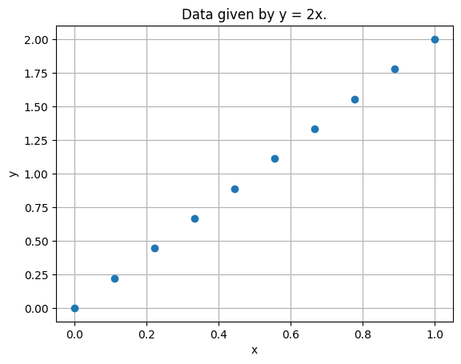
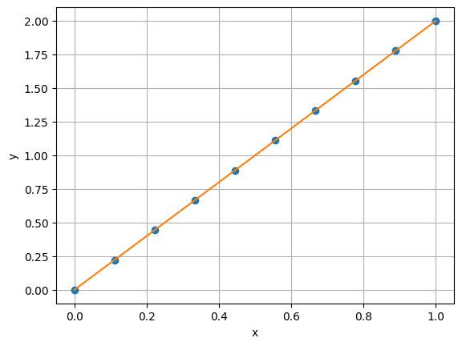
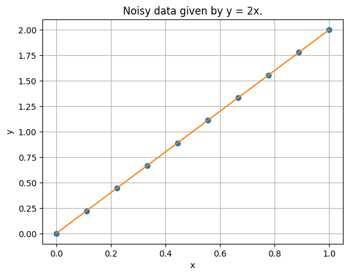
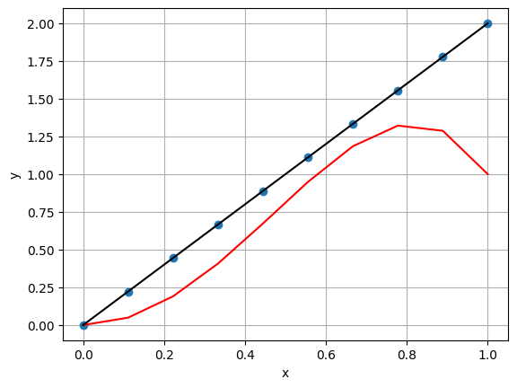

import numpy as np
import matplotlib.pyplot as plt
# Define arbitrarly x
x = np.linspace(0, 1, 10)
y = 2 * x
# Visualize the data
plt.plot(x, y, 'o')
plt.title("Data given by y = 2x.")
plt.xlabel("x")
plt.ylabel("y")
plt.grid()
plt.show()

# Define a function f(x, theta) such that:
# f(x, theta) = theta_1 + theta_2 * x
def f(x, theta):
return theta[0] + theta[1] * x
# Visualize (on the same plot with the data) the function
# f(x, theta) for a user-defined vector theta.
theta = [0, 2]
plt.plot(x, y, 'o')
plt.plot(x, f(x, theta))
plt.xlabel("x")
plt.ylabel("y")
plt.grid()
plt.show()

# Consider a little bit of noise
y_noisy = y + np.random.normal(loc=0, scale=0.2, size=y.shape)
# Visualize the noisy data
theta = [0, 2]
plt.plot(x, y_noisy, 'o')
plt.plot(x, f(x, theta))
plt.title("Noisy data given by y = 2x.")
plt.xlabel("x")
plt.ylabel("y")
plt.grid()
plt.show()

# Given x and y_noisy, define the matrices X and Y as in the
# notes.
N = x.shape[0]
X = np.ones((2, N))
X[1] = x
Y = y_noisy
# Solve Normal Equations XX^T theta = XY
# Suggested: use Cholesky
L = np.linalg.cholesky(X @ X.T)
## First step: solve Lz = XY
z = np.linalg.solve(L, X @ Y)
## Second step: solve L^T theta = z
theta = np.linalg.solve(L.T, z)
plt.plot(x, y_noisy, 'o')
plt.plot(x, f(x, theta))
plt.title("Noisy data given by y = 2x.")
plt.xlabel("x")
plt.ylabel("y")
plt.grid()
plt.show()

import pandas as pd
import numpy as np
import matplotlib.pyplot as plt
# Load data
data = pd.read_csv("./data/poly_regression_large.csv")
x, y = data["x"], data["y"]
# Visualize the data
plt.plot(x, y, 'o')
plt.title("Complex data")
plt.xlabel("x")
plt.ylabel("y")
plt.grid()
plt.show()
---------------------------------------------------------------------------
FileNotFoundError Traceback (most recent call last)
Cell In[5], line 6
3 import matplotlib.pyplot as plt
5 # Load data
----> 6 data = pd.read_csv("./data/poly_regression_large.csv")
7 x, y = data["x"], data["y"]
9 # Visualize the data
File /opt/hostedtoolcache/Python/3.11.14/x64/lib/python3.11/site-packages/pandas/io/parsers/readers.py:1026, in read_csv(filepath_or_buffer, sep, delimiter, header, names, index_col, usecols, dtype, engine, converters, true_values, false_values, skipinitialspace, skiprows, skipfooter, nrows, na_values, keep_default_na, na_filter, verbose, skip_blank_lines, parse_dates, infer_datetime_format, keep_date_col, date_parser, date_format, dayfirst, cache_dates, iterator, chunksize, compression, thousands, decimal, lineterminator, quotechar, quoting, doublequote, escapechar, comment, encoding, encoding_errors, dialect, on_bad_lines, delim_whitespace, low_memory, memory_map, float_precision, storage_options, dtype_backend)
1013 kwds_defaults = _refine_defaults_read(
1014 dialect,
1015 delimiter,
(...) 1022 dtype_backend=dtype_backend,
1023 )
1024 kwds.update(kwds_defaults)
-> 1026 return _read(filepath_or_buffer, kwds)
File /opt/hostedtoolcache/Python/3.11.14/x64/lib/python3.11/site-packages/pandas/io/parsers/readers.py:620, in _read(filepath_or_buffer, kwds)
617 _validate_names(kwds.get("names", None))
619 # Create the parser.
--> 620 parser = TextFileReader(filepath_or_buffer, **kwds)
622 if chunksize or iterator:
623 return parser
File /opt/hostedtoolcache/Python/3.11.14/x64/lib/python3.11/site-packages/pandas/io/parsers/readers.py:1620, in TextFileReader.__init__(self, f, engine, **kwds)
1617 self.options["has_index_names"] = kwds["has_index_names"]
1619 self.handles: IOHandles | None = None
-> 1620 self._engine = self._make_engine(f, self.engine)
File /opt/hostedtoolcache/Python/3.11.14/x64/lib/python3.11/site-packages/pandas/io/parsers/readers.py:1880, in TextFileReader._make_engine(self, f, engine)
1878 if "b" not in mode:
1879 mode += "b"
-> 1880 self.handles = get_handle(
1881 f,
1882 mode,
1883 encoding=self.options.get("encoding", None),
1884 compression=self.options.get("compression", None),
1885 memory_map=self.options.get("memory_map", False),
1886 is_text=is_text,
1887 errors=self.options.get("encoding_errors", "strict"),
1888 storage_options=self.options.get("storage_options", None),
1889 )
1890 assert self.handles is not None
1891 f = self.handles.handle
File /opt/hostedtoolcache/Python/3.11.14/x64/lib/python3.11/site-packages/pandas/io/common.py:873, in get_handle(path_or_buf, mode, encoding, compression, memory_map, is_text, errors, storage_options)
868 elif isinstance(handle, str):
869 # Check whether the filename is to be opened in binary mode.
870 # Binary mode does not support 'encoding' and 'newline'.
871 if ioargs.encoding and "b" not in ioargs.mode:
872 # Encoding
--> 873 handle = open(
874 handle,
875 ioargs.mode,
876 encoding=ioargs.encoding,
877 errors=errors,
878 newline="",
879 )
880 else:
881 # Binary mode
882 handle = open(handle, ioargs.mode)
FileNotFoundError: [Errno 2] No such file or directory: './data/poly_regression_large.csv'
def f(x, theta):
return theta[0] + theta[1] * x
# Given x and y_noisy, define the matrices X and Y as in the
# notes.
N = x.shape[0]
X = np.ones((2, N))
X[1] = x
Y = y
# Solve Normal Equations XX^T theta = XY
# Suggested: use Cholesky
L = np.linalg.cholesky(X @ X.T)
## First step: solve Lz = XY
z = np.linalg.solve(L, X @ Y)
## Second step: solve L^T theta = z
theta = np.linalg.solve(L.T, z)
plt.plot(x, y, 'o')
plt.plot(x, f(x, theta))
plt.title("Noisy data given by y = 2x.")
plt.xlabel("x")
plt.ylabel("y")
plt.grid()
plt.show()

# Define polynomial matrix PhiX and Y
def vandermonde(x, K):
# Returns PhiX of degree K
PhiX = np.zeros((K, N))
for j in range(K):
PhiX[j, :] = x**j
return PhiX
def f(x, theta):
y = 0
for j in range(len(theta)):
y = y + theta[j] * x**j
return y
PhiX = vandermonde(x, K=10)
Y = y
# Solve normal equations associated with this problem with cholesky and
# visualize the result (copy-paste)
L = np.linalg.cholesky(PhiX @ PhiX.T)
## First step: solve Lz = XY
z = np.linalg.solve(L, PhiX @ Y)
## Second step: solve L^T theta = z
theta = np.linalg.solve(L.T, z)
theta_true = [0, 0, 4, 0, -3]
plt.plot(x, y, 'o')
plt.plot(x, f(x, theta_true), 'r')
plt.plot(x, f(x, theta), 'k')
plt.xlabel("x")
plt.ylabel("y")
plt.grid()

import numpy as np
def SGD(loss, grad_loss, D, theta0, alpha, batch_size, n_epochs):
X, y = D # Unpack the data
N = X.shape[0] # We assume both X and Y has shape (N, )
d = theta0.shape[0] # While theta0 has shape (d, )
idx = np.arange(0, N) # This is required for the shuffling
# Initialization of history vectors
theta_history = np.zeros((n_epochs, d)) # Save parameters at each epoch
loss_history = np.zeros((n_epochs, )) # Save loss values at each epoch
grad_norm_history = np.zeros((n_epochs, )) # Save gradient norms at each epoch
# Initialize weights
theta = theta0
for epoch in range(n_epochs):
# Shuffle the data at the beginning of each epoch
np.random.shuffle(idx)
X = X[idx]
y = y[idx]
# Initialize a vector that saves the gradient of the loss at each iteration
grad_loss_vec = []
for batch_start in range(0, N, batch_size):
batch_end = min(batch_start + batch_size, N)
X_batch = X[batch_start:batch_end]
y_batch = y[batch_start:batch_end]
# Compute the gradient of the loss
gradient = grad_loss(theta, X_batch, y_batch)
grad_loss_vec.append(np.linalg.norm(gradient, 2))
# Update weights
theta = theta - alpha * gradient
# Save the updated values
theta_history[epoch] = theta
loss_history[epoch] = loss(theta, X, y)
grad_norm_history[epoch] = np.mean(grad_loss_vec)
return theta_history, loss_history, grad_norm_history
def f(x, theta):
y = 0
for j in range(len(theta)):
y = y + theta[j] * x**j
return y
def loss(theta, X, y):
y_pred = f(X, theta)
error = np.square(y_pred - y)
return np.mean(error)
def grad_loss(theta, X, y):
N = len(y)
return 2/N * (f(X, theta) - y)